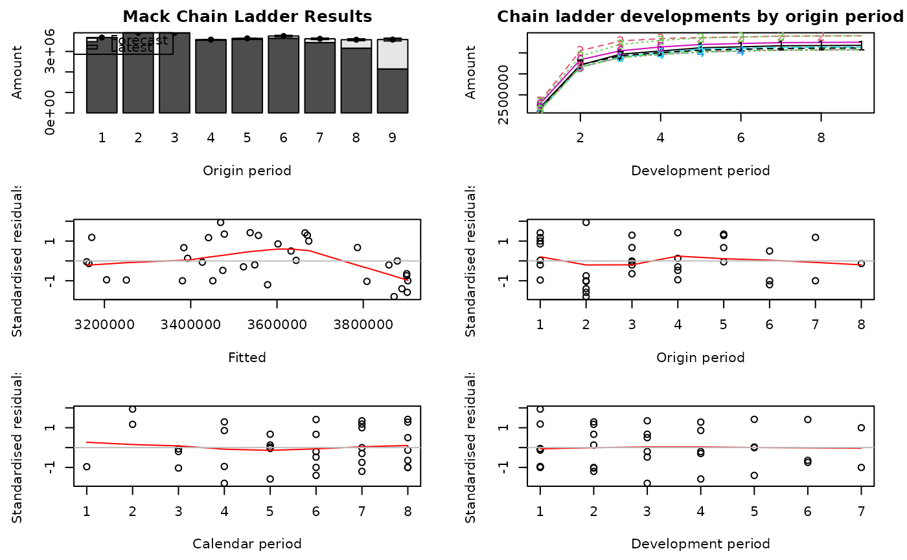

One year claims development result
CDR.RdStandard deviation of the claims development result after one year for the distribution-free chain-ladder model (Mack) and Bootstrap model.
Usage
CDR(x, ...)
# S3 method for MackChainLadder
CDR(x, dev=1, ...)
# S3 method for BootChainLadder
CDR(x, probs=c(0.75, 0.95), ...)
# S3 method for default
CDR(x, ...)Arguments
- x
otput of either
MackChainLadderorBootChainLadder- dev
vector of development periods or
"all". Currently only applicable forMackChainLadderoutput. Defines the years for which the run off claims development result should be returned.- probs
only applicable for
BootChainLadderoutput. Define quantiles to be returned.- ...
other arguments
Details
Merz & Wüthrich (2008) derived analytic formulae for the mean square error of prediction of the claims development result for the Mack chain-ladder model after one year assuming:
The opening reserves were set using the pure chain-ladder model (no tail)
Claims develop in the year according to the assumptions underlying Mack's model
Reserves are set after one year using the pure chain-ladder model (no tail)
Value
A data.frame with various IBNR/reserves and one-year statistics of the
claims development result.
References
Michael Merz, Mario V. Wüthrich. Modelling the claims development result for solvency purposes. Casualty Actuarial Society E-Forum, Fall 2008.
Michael Merz, Mario V. Wüthrich. Claims Run-Off Uncertainty: The Full Picture. Swiss Finance Institute Research Paper No. 14-69. https://www.ssrn.com/abstract=2524352. 2014
Author
Mario Wüthrich and Markus Gesmann
with contributions from Arthur Charpentier and Arnaud Lacoume
for CDR.MackChainLadder and Giuseppe Crupi and
Markus Gesmann for CDR.BootChainLadder.
See also
See also MackChainLadder and BootChainLadder
Examples
# Example from the 2008 Merz, Wuthrich paper mentioned above
MW2008
#> dev
#> origin 1 2 3 4 5 6 7 8 9
#> 1 2202584 3210449 3468122 3545070 3621627 3644636 3669012 3674511 3678633
#> 2 2350650 3553023 3783846 3840067 3865187 3878744 3898281 3902425 NA
#> 3 2321885 3424190 3700876 3798198 3854755 3878993 3898825 NA NA
#> 4 2171487 3165274 3395841 3466453 3515703 3548422 NA NA NA
#> 5 2140328 3157079 3399262 3500520 3585812 NA NA NA NA
#> 6 2290664 3338197 3550332 3641036 NA NA NA NA NA
#> 7 2148216 3219775 3428335 NA NA NA NA NA NA
#> 8 2143728 3158581 NA NA NA NA NA NA NA
#> 9 2144738 NA NA NA NA NA NA NA NA
M <- MackChainLadder(MW2008, est.sigma="Mack")
plot(M)

CDR(M)
#> IBNR CDR(1)S.E. Mack.S.E.
#> 1 0.000 0.0000 0.0000
#> 2 4377.670 566.1744 566.1744
#> 3 9347.477 1486.5603 1563.8075
#> 4 28392.406 3923.0986 4157.2733
#> 5 51444.021 9722.8598 10536.4380
#> 6 111811.123 28442.6216 30319.4638
#> 7 187084.178 20954.2870 35967.0384
#> 8 411864.225 28119.3180 45090.1821
#> 9 1433505.008 53320.8210 69552.3397
#> Total 2237826.107 81080.5468 108401.3875
# Return all run-off result developments
CDR(M, dev="all")
#> IBNR CDR(1)S.E. CDR(2)S.E. CDR(3)S.E. CDR(4)S.E. CDR(5)S.E.
#> 1 0.000 0.0000 0.0000 0.0000 0.0000 0.0000
#> 2 4377.670 566.1744 0.0000 0.0000 0.0000 0.0000
#> 3 9347.477 1486.5603 485.4195 0.0000 0.0000 0.0000
#> 4 28392.406 3923.0986 1305.9869 431.9915 0.0000 0.0000
#> 5 51444.021 9722.8598 3830.3960 1277.0783 423.8641 0.0000
#> 6 111811.123 28442.6216 9689.5440 3820.5641 1274.3261 423.4215
#> 7 187084.178 20954.2870 27423.5036 9340.4725 3684.4291 1229.1060
#> 8 411864.225 28119.3180 20421.8007 26951.8084 9178.4040 3621.3651
#> 9 1433505.008 53320.8210 27782.3071 20193.6339 26778.3919 9118.5624
#> Total 2237826.107 81080.5468 52222.0516 38517.4943 29104.1066 10109.0020
#> CDR(6)S.E. CDR(7)S.E. CDR(8)S.E. CDR(9)S.E. Mack.S.E.
#> 1 0.0000 0.0000 0.0000 0 0.0000
#> 2 0.0000 0.0000 0.0000 0 566.1744
#> 3 0.0000 0.0000 0.0000 0 1563.8075
#> 4 0.0000 0.0000 0.0000 0 4157.2733
#> 5 0.0000 0.0000 0.0000 0 10536.4380
#> 6 0.0000 0.0000 0.0000 0 30319.4638
#> 7 408.6786 0.0000 0.0000 0 35967.0384
#> 8 1208.1604 401.9014 0.0000 0 45090.1821
#> 9 3598.2399 1200.5081 399.4584 0 69552.3397
#> Total 3876.0093 1281.3024 399.4584 0 108401.3875
# Example from the 2014 Merz, Wuthrich paper mentioned above
MW2014
#> dev
#> origin 0 1 2 3 4 5 6 7 8 9 10 11
#> 1 13109 20355 21337 22043 22401 22658 22997 23158 23492 23664 23699 23904
#> 2 14457 22038 22627 23114 23238 23312 23440 23490 23964 23976 24048 24111
#> 3 16075 22672 23753 24052 24206 24757 24786 24807 24823 24888 24986 25401
#> 4 15682 23464 24465 25052 25529 25708 25752 25770 25835 26075 26082 26146
#> 5 16551 23706 24627 25573 26046 26115 26283 26481 26701 26718 26724 26728
#> 6 15439 23796 24866 25317 26139 26154 26175 26205 26764 26818 26836 26959
#> 7 14629 21645 22826 23599 24992 25434 25476 25549 25604 25709 25723 NA
#> 8 17585 26288 27623 27939 28335 28638 28715 28759 29525 30302 NA NA
#> 9 17419 25941 27066 27761 28043 28477 28721 28878 28948 NA NA NA
#> 10 16665 25370 26909 27611 27729 27861 29830 29844 NA NA NA NA
#> 11 15471 23745 25117 26378 26971 27396 27480 NA NA NA NA NA
#> 12 15103 23393 26809 27691 28061 29183 NA NA NA NA NA NA
#> 13 14540 22642 23571 24127 24210 NA NA NA NA NA NA NA
#> 14 14590 22336 23440 24029 NA NA NA NA NA NA NA NA
#> 15 13967 21515 22603 NA NA NA NA NA NA NA NA NA
#> 16 12930 20111 NA NA NA NA NA NA NA NA NA NA
#> 17 12539 NA NA NA NA NA NA NA NA NA NA NA
#> dev
#> origin 12 13 14 15 16
#> 1 23960 23992 23994 24001 24002
#> 2 24252 24538 24540 24550 NA
#> 3 25681 25705 25732 NA NA
#> 4 26150 26167 NA NA NA
#> 5 26735 NA NA NA NA
#> 6 NA NA NA NA NA
#> 7 NA NA NA NA NA
#> 8 NA NA NA NA NA
#> 9 NA NA NA NA NA
#> 10 NA NA NA NA NA
#> 11 NA NA NA NA NA
#> 12 NA NA NA NA NA
#> 13 NA NA NA NA NA
#> 14 NA NA NA NA NA
#> 15 NA NA NA NA NA
#> 16 NA NA NA NA NA
#> 17 NA NA NA NA NA
W <- MackChainLadder(MW2014, est.sigma="Mack")
plot(W)
CDR(W)
#> IBNR CDR(1)S.E. Mack.S.E.
#> 1 0.000000 0.0000000 0.0000000
#> 2 1.022874 0.4083149 0.4083149
#> 3 10.085643 2.5393857 2.5652899
#> 4 21.187574 16.7232632 16.8984949
#> 5 117.662565 156.4022713 157.2756452
#> 6 223.279748 137.6522771 207.1650862
#> 7 361.808180 171.1812092 261.9266093
#> 8 469.408830 70.3161155 292.2622285
#> 9 653.504225 271.6352221 390.5874717
#> 10 1008.763182 310.1268449 502.0606072
#> 11 1011.859648 103.3834357 486.0911099
#> 12 1406.702133 632.6388191 806.9028971
#> 13 1492.903495 315.0489135 793.9381916
#> 14 1917.636398 406.1424672 891.6613403
#> 15 2458.152208 285.2076540 916.4940218
#> 16 3384.341045 668.2337878 1106.1262716
#> 17 9596.552341 733.2222786 1295.6909824
#> Total 24134.870088 1842.8507073 3233.6807352
# Example with the BootChainLadder function, assuming overdispered Poisson model
B <- BootChainLadder(MW2008, process.distr=c("od.pois"))
B
#> BootChainLadder(Triangle = MW2008, process.distr = c("od.pois"))
#>
#> Latest Mean Ultimate Mean IBNR IBNR.S.E IBNR 75% IBNR 95%
#> 1 3,678,633 3,678,633 0 0 0 0
#> 2 3,902,425 3,906,883 4,458 5,838 7,251 15,730
#> 3 3,898,825 3,908,126 9,301 7,851 13,437 23,715
#> 4 3,548,422 3,576,482 28,060 11,950 34,942 48,514
#> 5 3,585,812 3,636,494 50,682 15,348 60,422 77,225
#> 6 3,641,036 3,753,777 112,741 24,239 127,219 156,787
#> 7 3,428,335 3,616,532 188,197 29,841 208,384 237,923
#> 8 3,158,581 3,571,910 413,329 43,679 443,030 487,666
#> 9 2,144,738 3,582,901 1,438,163 99,304 1,504,845 1,602,561
#>
#> Totals
#> Latest: 30,986,807
#> Mean Ultimate: 33,231,739
#> Mean IBNR: 2,244,932
#> IBNR.S.E 129,240
#> Total IBNR 75%: 2,329,596
#> Total IBNR 95%: 2,453,303
CDR(B)
#> IBNR IBNR.S.E CDR(1)S.E CDR(1)75% CDR(1)95%
#> 1 0.000 0.000 0.000 0.00 0.00
#> 2 4458.287 5837.702 5837.702 7251.00 15730.10
#> 3 9301.126 7851.285 6138.508 12265.83 20472.83
#> 4 28060.472 11950.050 9670.394 33827.09 45733.94
#> 5 50681.673 15348.098 10349.303 57603.84 69856.05
#> 6 112740.894 24239.197 17395.146 123204.35 142388.98
#> 7 188197.402 29840.570 19247.573 199111.79 220974.32
#> 8 413329.303 43679.160 34230.543 435782.22 470408.21
#> 9 1438162.512 99303.992 87812.047 1495568.36 1586343.21
#> Total 2244931.670 129240.075 107936.442 2321165.67 2416666.36